สไลด์ต้นฉบับของตอนนี้ (หน้า 2–5, 23)


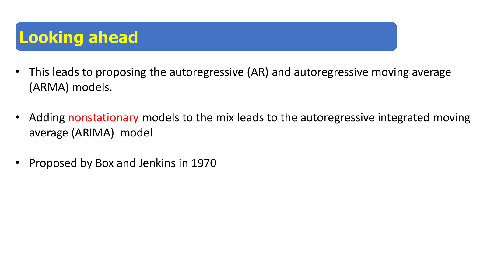
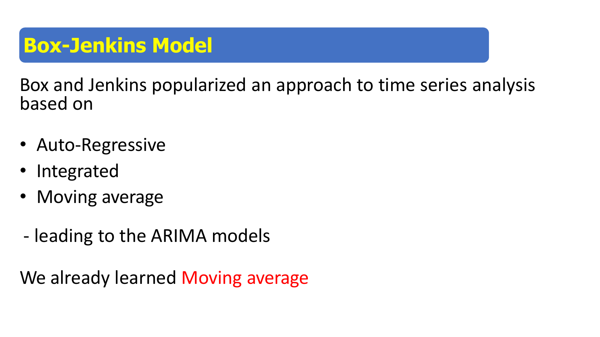
Slide 5 — Model for Stationary Time Series (Part 1)
สองบทก่อนเราทำให้อนุกรมนิ่งด้วยการ detrend หรือ differencing แต่ส่วนที่เหลือยังมี autocorrelation อยู่ เช่น residual ของอุณหภูมิโลกที่ lag 1 ยังสูงถึง 0.530 บทนี้ถามต่อว่า อนุกรมที่นิ่งแล้วแต่ยังสัมพันธ์กันข้ามเวลา จะเขียนเป็นสมการได้อย่างไร Box และ Jenkins ตอบด้วยโมเดลพื้นฐานสองแบบ แบบแรกคือ MA(q) ซึ่งค่าวันนี้เกิดจาก shock ของวันนี้และย้อนหลัง q วัน ACF ของมันจึงมีค่าถึง lag q แล้วเป็นศูนย์ทันที แบบที่สองคือ AR(p) ซึ่งค่าวันนี้เกิดจากค่าของตัวเองย้อนหลัง p วันบวก shock ใหม่ ACF ของมันจึงค่อย ๆ ลดและไม่ตัดทันที วิธีเรียนของบทนี้คือศึกษาสมบัติของแต่ละโมเดลก่อน แล้วนำไปเทียบกับข้อมูลจริง ถ้าตรงก็ใช้โมเดลนั้นพยากรณ์1 สมบัติที่ต้องหาได้ทุกโมเดลคือ mean, autocovariance \(\gamma_h\) และ ACF \(\rho_h\) ข้อสอบมีสองภาค คือภาค concept และภาคปฏิบัติกับข้อมูลจริง2 MA ในข้อสอบที่ผ่านมาไม่ค่อยมีใครทำผิด ส่วนที่ยากคือเมื่อ MA กับ AR ผสมกัน3
ก่อนเริ่ม Box-Jenkins ข้อมูลจริงชุดหนึ่งถูกใช้เทียบสองวิธีจาก Lesson 4 คือยอดขาย Xbox รายเดือนตั้งแต่พฤศจิกายน 2005 ถึงธันวาคม 2014 รวม 110 เดือน โดยมีเป้าหมายพยากรณ์มกราคมถึงมีนาคม 20154 ไฟล์คือ XBOX.txt กับ R_codes_1.txt ในโฟลเดอร์ CLASS 5 วันที่ในไฟล์เขียนแบบอเมริกา คือเดือน/วัน/ปี เช่น 11/01/2005 คือ 1 พฤศจิกายน จึงต้องบอก R ด้วย format = "%m/%d/%Y" มิฉะนั้น R จะอ่านผิด เรื่องนี้สำคัญกับโมเดลท้าย ๆ อย่าง Facebook Prophet5 กราฟมียอดพุ่งทุกพฤศจิกายนและธันวาคมซึ่งเป็นช่วงเทศกาล และความสูงของยอดพุ่งไม่เท่ากันทุกปี seasonal จึงน่าจะเป็นแบบคูณ6 อีกเรื่องที่ต้องสังเกตคือยอดรายปีขึ้นแล้วลง ผลรวมปี 2011 ราว 7.97 ล้านเครื่อง แต่ปี 2014 เหลือ 1.45 ล้าน เพราะ Xbox 360 กำลังหมดรุ่น
วิธีแรกคือ ETS ซึ่ง R เลือก ETS(M,A,M) คือ error แบบคูณ trend แบบบวก และ seasonal แบบคูณ ซึ่งเป็น Holt-Winters แบบคูณที่มีครบ α, β, γ การรู้ชื่อเหล่านี้มีประโยชน์เวลาต้องค้นคว้าเอง7 α = 0.3619 แปลว่า level ปรับตามข้อมูลใหม่พอสมควร β = 0.0156 (ราว 0.016) แปลว่าความชันแทบไม่เปลี่ยน และ γ = 0.419 แปลว่ารูปแบบฤดูกาลปรับตามปีล่าสุดค่อนข้างมาก ค่าพยากรณ์มกราคม 2015 ราว 42,942 เครื่อง เทียบกับมกราคม 2014 ที่ขายได้ 108,003 ซึ่งสอดคล้องกับยอดที่ลดลงต่อเนื่อง วิธีที่สองคือ decomposition แบบคูณด้วย regression ตามขั้นใน Excel ของ Lesson 48 ได้ trend \(388917.9+249.72t\) และ seasonal ตั้งแต่มกราคม 0.822 ไปจนถึงธันวาคม 3.127 ซึ่งแปลว่ายอดธันวาคมสูงกว่า trend ราว 3 เท่า โค้ดนี้ปรับ seasonal ด้วยการหารด้วยค่าเฉลี่ย ขณะที่ Excel ลบส่วนเกินออก เมื่อค่าเฉลี่ยใกล้ 1 สองวิธีให้ผลเกือบเท่ากัน
ผลที่สำคัญคือค่าพยากรณ์มกราคมจาก regression คือ 342,461 สูงกว่า ETS ราว 8 เท่า และสูงกว่ายอดมกราคม 2014 มาก สาเหตุคือเส้นตรงที่ลากผ่านข้อมูลทั้ง 9 ปีมีความชันบวก (+250 ต่อเดือน) เพราะช่วงปี 2006–2011 ยอดขึ้น แต่สามปีหลังยอดลดลงต่อเนื่อง เส้นตรงจึงไม่เห็นขาลงนี้ ส่วน ETS ปรับ level ตามข้อมูลล่าสุดด้วย α จึงตามขาลงทัน ในคลิปบอกว่าสองวิธี "ใกล้เคียง ... ไม่ได้ต่างกันมาก" แต่ output บนจอที่เฟรม 1:02 ก็แสดง 342461.0 เช่นเดียวกับที่รันได้ บทเรียนคือ decomposition ด้วย regression ใช้ได้ดีเมื่อ trend เป็นเส้นตรงจริง เช่น beer ใน Lesson 4 แต่ใช้ไม่ได้กับสินค้าที่ขึ้นแล้วลง วิธีที่สามในไฟล์ใช้ decompose() หาร seasonal ออก พยากรณ์ส่วนที่เหลือด้วย auto.arima() แล้วคูณ seasonal กลับ ได้ 64,964, 70,639 และ 64,994 วิธีนี้ให้ข้ามไปก่อนเพราะผลไม่ค่อยดี9 และ auto.arima จะเรียนใน Lesson 10 โปรเจกต์ปลายภาคต้องมีโมเดล exponential หนึ่งตัว และจะเปรียบเทียบกับ decomposition ก็ได้10 โมเดลหลักของวิชาคือ exponential smoothing, decomposition และ Box-Jenkins ส่วนโมเดลยุคใหม่คือ neural network และ Facebook Prophet11
data <- read.table("xbox.txt", h=T)
data$date <- as.Date(data$date, format = "%m/%d/%Y")
library(lubridate)
sales_ts <- ts(data$sales, start = c(year(min(data$date)), month(min(data$date))), frequency = 12)
etssales <- ets(sales_ts); forecast(etssales, h = 3)
trend_fit <- lm(y ~ t) # ขั้น 1 trend เส้นตรง
detrended <- y / trend_hat # ขั้น 2 detrend แบบคูณ
seasonal <- tapply(detrended, cycle(y), mean) # ขั้น 3 เฉลี่ยตามเดือน
seasonal <- seasonal / mean(seasonal) # ปรับให้เฉลี่ยเป็น 1
forecast <- trend_future * seasonal_future # ขั้น 4 trend × seasonalETS(M,A,M) alpha = 0.3619 beta = 0.0156 gamma = 0.419 sigma 0.2957
AIC AICc BIC
3045.657 3052.309 3091.565
Point Forecast Lo 80 Hi 80 Lo 95 Hi 95
Jan 2015 42941.97 26666.44 59217.50 18050.700 67833.24
Feb 2015 42531.02 24783.83 60278.21 15389.039 69673.00
Mar 2015 33242.12 17493.27 48990.98 9156.328 57327.92
trend: 388917.9 + 249.72 t
seasonal: ม.ค. 0.822 ก.พ. 0.762 มี.ค. 0.666 ... พ.ย. 2.307 ธ.ค. 3.127
forecast: 342461.0 317604.6 277801.0
year(min(...)) และ month(min(...)) จาก lubridate ดึงปีและเดือนของวันแรกได้ start = c(2005, 11) และ frequency = 12 บอกว่าหนึ่งรอบ seasonal มี 12 จุด ถ้าลืม ETS และ decompose จะไม่เห็น seasonal
Box-Jenkins เป็นโมเดลมาตรฐานที่ทุกวิชาอนุกรมเวลาต้องสอน12 ประสิทธิภาพไม่ได้แย่และไม่ได้ดีเด่น แต่ข้อดีเหนือ ETS และ decomposition คือไม่ต้องเป็นข้อมูลรายเดือนหรือรายไตรมาส จึงยืดหยุ่นกว่า13 เช่น ผลตอบแทนหุ้นรายวันที่ไม่มีฤดูกาลก็ใช้ได้ สไลด์ทบทวน detrending จาก Lesson 3 และชี้ว่ามีวิธีที่ยืดหยุ่นกว่าเส้นตรง คือให้ intercept และ slope เปลี่ยนตามเวลา \(X_t=\alpha_t+\beta_t t+w_t\) ซึ่งอยู่ใน the state space modeling approach และอีกทางคือ lowess estimator ทั้งสองไม่อยู่ในวิชานี้ ข้อที่ต้องจำคือ trend เส้นตรงแบบคงที่อย่างที่ใช้กับ Xbox มีข้อจำกัด และถ้า trend ไม่ใช่เส้นตรงต้องหาวิธีอื่น
ส่วน differencing นั้น This technique is integral part of the so-called Box-Jenkins methodology และ non-seasonal usually a first order difference is sufficient ลองดูอนุกรม 10, 13, 16, 19 ที่มี trend เส้นตรง ผลต่างครั้งแรกคือ 3, 3, 3 ไม่มี trend แล้ว แต่ถ้าอนุกรมคือ \(t^2\) = 1, 4, 9, 16, 25 ผลต่างครั้งแรกคือ 3, 5, 7, 9 ซึ่งยังเพิ่มขึ้น ต้องทำผลต่างครั้งที่สองจึงได้ 2, 2, 2 สูตรผลต่างครั้งที่สอง \(\nabla^2X_t=X_t-2X_{t-1}+X_{t-2}\) เริ่มได้ที่ t = 3 เพราะต้องใช้สองค่าก่อนหน้า จำนวนครั้งที่ difference คือ d ใน ARIMA ซึ่งจะเรียนใน Lesson 6 เหตุผลของทั้งบทอยู่ในข้อความที่ว่า regression ใน detrending is sometimes insufficient for explaining all of the dynamics of a time series residual ของอุณหภูมิหลัง detrend ยังมี ACF ที่ lag 1 เท่ากับ 0.530 แปลว่า residual ปีนี้ยังสัมพันธ์กับปีก่อน regression มองแต่ trend จึงอธิบายความสัมพันธ์ข้ามเวลานี้ไม่ได้ โมเดลที่ตอบโจทย์นี้คือ AR, ARMA และเมื่อเพิ่ม differencing เพื่อรองรับข้อมูลไม่นิ่งก็เป็น ARIMA ซึ่ง Box และ Jenkins เสนอในปี 1970 ชื่อ ARIMA มาจากสามส่วน คือ AR ในบทนี้ I (differencing) ใน Lesson 6 และ MA ในบทนี้
ต้องระวังเรื่องชื่อ MA ในบทนี้ไม่ใช่ moving average ที่เรียนใน Lesson 414 moving average ใน Lesson 4 คือการเฉลี่ยค่าที่สังเกตได้ \(X\) เพื่อทำให้เรียบ ส่วน MA ในบทนี้คือโมเดลที่ \(X_t\) เป็นผลรวมถ่วงน้ำหนักของ white noise \(w\) ซึ่งสังเกตไม่ได้ ชื่อเหมือนกันแต่เป็นคนละเรื่อง เครื่องมือที่ใช้เขียนโมเดลทั้งบทคือ backshift operator \(BX_t=X_{t-1}\), \(B^2X_t=X_{t-2}\) และ \(B^kX_t=X_{t-k}\) ซึ่ง B ไม่ใช่ตัวเลข แต่เป็นคำสั่ง "ถอยหลังหนึ่งช่วง"15 ใช้กับ \(w\) ได้เหมือนกัน คือ \(Bw_t=w_{t-1}\) และ differencing เขียนได้เป็น \(\nabla X_t=(1-B)X_t\) ประโยชน์ของ B คือทำให้เขียนโมเดลยาว ๆ เป็นพหุนามสั้น ๆ แล้วใช้พีชคณิตกับพหุนามนั้นได้ เช่น แยกตัวประกอบ
ก่อนเข้าสู่โมเดล ต้องแยกให้ออกว่าในสมการมีของสองอย่าง \(w_t\) คือสิ่งที่ใส่เข้าไป เป็นความบังเอิญของวันนั้นที่มองไม่เห็น ส่วน \(X_t\) คือผลลัพธ์ที่จดได้จริงในวันนั้น ลองนึกถึงร้านไอศกรีม \(w_t\) คือโชคของวันนี้ว่าบังเอิญมีคนเดินผ่านมากหรือน้อย และ \(X_t\) คือยอดขายที่จดลงสมุด ยอดขายวันนี้มีผลของอดีตปนอยู่ได้สองแบบ แบบแรก ผลของโชคเมื่อวานยังค้างมาถึงวันนี้ เช่น เมื่อวานบังเอิญคนมาเยอะ คนกลุ่มนั้นไปบอกเพื่อน เพื่อนจึงมาวันนี้ แต่การบอกต่อจบภายในวันเดียว นี่คือแนวคิดของ MA แบบที่สอง ยอดขายเมื่อวานส่งผลมาถึงวันนี้โดยตรง เช่น ลูกค้าเมื่อวานครึ่งหนึ่งกลายเป็นลูกค้าประจำ และยอดเมื่อวานก็มีผลของวันก่อน ๆ ปนอยู่แล้ว ผลของอดีตจึงส่งต่อไปเรื่อย ๆ นี่คือแนวคิดของ AR


ราคาน้ำมันวันนี้ขึ้นกับอะไร ถ้าเมื่อวานมีข่าวสงคราม ราคาวันนี้ยังได้รับผลอยู่ พรุ่งนี้อาจยังเหลือผลเล็กน้อย แล้วหลังจากนั้นข่าวนั้นก็หมดผล MA(q) คือโมเดลของแนวคิดนี้ ค่าวันนี้คือผลรวมของ shock วันนี้กับ shock ย้อนหลัง q วัน และ shock ที่เก่ากว่า q วันไม่มีผลแล้ว นิยามคือ \(X_t=w_t+\theta_1w_{t-1}+\theta_2w_{t-2}+\dots+\theta_qw_{t-q}\) เรียกว่า a moving average model of order q โดย \(w_t\) เป็น Gaussian white noise ที่มี mean 0 และ variance \(\sigma^2\) และ \(\theta_q\neq 0\) เงื่อนไขสุดท้ายทำให้ order ชัดเจน ถ้า \(\theta_3=0\) โมเดลที่เขียนว่า MA(3) ก็คือ MA(2)16 q คือ order และเป็นจำนวนพารามิเตอร์ θ ซึ่งไม่ควรมีมาก เหมือน regression ที่มีตัวแปรต้นมากก็ต้องทำ variable selection ตัว w เป็นตัวแปรสุ่ม ส่วน θ เป็นสัมประสิทธิ์คล้าย slope และ \(w_t\) คือค่าของปัจจัยอื่นที่ไม่ได้เก็บไว้ เช่น GDP ปีนี้ถูกกำหนดโดยเหตุการณ์ที่ไม่อยู่ในข้อมูล GDP ภาษา finance เรียก w ว่า shock17 สไลด์ให้สองแบบ คือแบบเครื่องหมายบวก และแบบเครื่องหมายลบ \(X_t=w_t-\theta_1w_{t-1}-\dots\) หนังสือ Cryer and Chan ใช้แบบลบ ส่วน R (arima, arima.sim) และคาบนี้ใช้แบบบวก สองแบบต่างกันแค่เครื่องหมายของ θ MA(1) แบบบวก θ = 0.5 คือโมเดลเดียวกับแบบลบ θ = −0.5 เวลาอ่านโจทย์จึงต้องดูว่าใช้แบบไหน
การเขียน MA(q) มีสามระดับ18 ระดับแรกเขียนยาวทุกพจน์ ระดับสองใช้ผลรวม \(X_t=w_t+\sum_{j=1}^{q}\theta_jw_{t-j}\) และระดับสามใช้ B เพราะ \(w_{t-j}=B^jw_t\) ทุกพจน์จึงมี \(w_t\) ร่วมและดึงออกมาได้
\(X_t=(1+\theta_1B+\dots+\theta_qB^q)w_t=\theta(B)w_t\)
การเขียนในรูปนี้สำคัญมาก19 พหุนามในวงเล็บคือ characteristic function ของ MA(q) ซึ่งบอกนิสัยของ MA20 เช่น MA(2) ที่ θ₁ = 0.4 และ θ₂ = −0.3 เขียนได้เป็น \(X_t=(1+0.4B-0.3B^2)w_t\) Lesson 6–7 จะแยกตัวประกอบพหุนามนี้เพื่อตรวจสมบัติของโมเดล ในเชิงสถิติ MA(q) can define correlated noise structure in our data and goes beyond the traditional assumption where errors are iid ใน regression ทั่วไปเราสมมติว่า error แต่ละตัวอิสระกัน แต่ \(X_t\) กับ \(X_{t-1}\) ของ MA(1) ใช้ \(w_{t-1}\) ร่วมกัน จึงสัมพันธ์กัน MA จึงเป็นเครื่องมือเขียน error ที่สัมพันธ์กันข้ามเวลา ในทางปฏิบัติอนุกรมไม่ได้แกว่งรอบศูนย์ สไลด์จึงเพิ่ม μ เป็น \(X_t=\mu+\theta(B)w_t\) โดย μ คือ a mean of the series และ θ คือ the parameters of the model ทุก \(w\) มี mean 0 จึงได้ \(E(X_t)=\mu\) R รายงาน μ ในชื่อ intercept เพราะเชื่อว่าอนุกรมไม่ได้แกว่งรอบ 021 และการเพิ่ม μ ไม่เปลี่ยน autocovariance เพราะค่าคงที่ไม่มี covariance กับอะไร สไลด์สรุปว่า MA is conceptually a linear regression of the current value of the series against current and previous white noise error terms ต่างจาก regression จริงตรงที่ shock สังเกตไม่ได้ จึงประมาณ θ ด้วย least squares ตรง ๆ ไม่ได้ ต้องใช้ maximum likelihood ซึ่ง R ทำให้ใน arima()
งานที่ต้องทำกับทุกโมเดลคือหา mean, autocovariance และ ACF เพราะข้อมูลจริงให้เราได้แค่ sample ACF ถ้ารู้ว่า ACF ตามทฤษฎีมีหน้าตาอย่างไร ก็เทียบรูปแล้วเลือกโมเดลได้ เริ่มจาก MA(1) \(X_t=w_t+\theta w_{t-1}\) ซึ่งเมื่อมี θ ตัวเดียวไม่ต้องห้อยเลข 122 ทุกขั้นใช้กฎสองข้อของ white noise คือ \(\mathrm{Var}(w_t)=\sigma^2\) และ \(\mathrm{Cov}(w_s,w_t)=0\) เมื่อ \(s\neq t\) และใช้วิธีนับ w ที่ "ชนกัน" จาก Lesson 1
\(E(X_t)=E(w_t)+\theta E(w_{t-1})=0\) แกว่งรอบศูนย์ ถ้าอยากให้แกว่งรอบค่าอื่นค่อยเติม intercept ทีหลัง23
\(\mathrm{Cov}(w_t+\theta w_{t-1},\,w_t+\theta w_{t-1})\) กระจายได้สี่คู่ คู่ที่ชนกันคือ \(w_t\) กับ \(w_t\) ได้ \(\sigma^2\) และ \(\theta w_{t-1}\) กับ \(\theta w_{t-1}\) ได้ \(\theta^2\sigma^2\) อีกสองคู่เป็น 0 จึงได้ \(\gamma_0=\sigma^2(1+\theta^2)\)24
\(\mathrm{Cov}(w_t+\theta w_{t-1},\,w_{t+1}+\theta w_t)\) คู่ที่ชนกันมีคู่เดียวคือ \(w_t\) กับ \(\theta w_t\) จึงได้ \(\gamma_1=\theta\sigma^2\)25
\(\mathrm{Cov}(w_t+\theta w_{t-1},\,w_{t+2}+\theta w_{t+1})\) ดัชนี t, t − 1 ไม่ตรงกับ t + 2, t + 1 เลย "ไม่มีตัวที่มันชนกันได้เลย" \(\gamma_h=0\) เมื่อ \(h\ge 2\)
\(\rho_0=1\), \(\rho_1=\dfrac{\theta\sigma^2}{\sigma^2(1+\theta^2)}=\dfrac{\theta}{1+\theta^2}\), \(\rho_h=0\) เมื่อ \(h\ge2\) σ² ตัดกันหมด ACF จึงขึ้นกับ θ อย่างเดียว
สูตร \(\rho_1=\theta/(1+\theta^2)\) ออกข้อสอบมาหลายปี และดูเหมือนง่ายแต่ไม่ง่ายจริง26 ผลข้างบนสรุปเป็นประโยคบนสไลด์ว่า MA(1) มี correlation เป็นศูนย์หลัง lag 1 ค่าที่ห่างกันหนึ่งช่วงสัมพันธ์กัน เพราะ \(X_t\) กับ \(X_{t-1}\) ใช้ shock \(w_{t-1}\) ร่วมกัน แต่ \(X_t\) กับ \(X_{t-2}\) ไม่มี shock ร่วมเลย สไลด์เน้นให้จำข้อนี้ไว้ใช้กับข้อมูลจริงผ่าน (e.g. sample autocorrelations ). ถ้า sample ACF ทะลุเส้นที่ lag 1 แล้วอยู่ในเส้นทั้งหมด ให้สงสัยว่าเป็น MA(1)27 MA(1) ยังมีสมบัติอีกสามข้อ28 ข้อแรก θ = 0 ทำให้ MA(1) เป็น white noise เพราะเหลือแค่ \(X_t=w_t\) ข้อสอง \(-\tfrac12\le\rho_1\le\tfrac12\) ทั้งที่ correlation ทั่วไปอยู่ได้ตั้งแต่ −1 ถึง 1 ข้อนี้เป็นข้อสอบเก่าที่ต้องพิสูจน์ ไม่ใช่แทนค่า θ ทีละตัว และในนักศึกษา 30 คนพิสูจน์ได้เพียง 2 คน29 ข้อสาม θ กับ 1/θ ให้ ρ₁ เท่ากัน
สำหรับทุกจำนวนจริง θ: \((1-|\theta|)^2\ge0\)
\(1-2|\theta|+\theta^2\ge0\) จึงได้ \(1+\theta^2\ge2|\theta|\)
\(\dfrac{|\theta|}{1+\theta^2}\le\dfrac12\) คือ \(|\rho_1|\le\tfrac12\)
เมื่อ \((1-|\theta|)^2=0\) คือ θ = 1 ได้ ρ₁ = 1/2 และ θ = −1 ได้ ρ₁ = −1/2
ในการใช้งาน ถ้า sample ACF ที่ lag 1 เท่ากับ 0.8 แล้ว lag อื่นเป็นศูนย์ ข้อมูลนี้ไม่ใช่ MA(1) เพราะ MA(1) สร้าง ρ₁ เกิน 0.5 ไม่ได้ ต้องพิจารณาโมเดลอื่น เช่น AR ส่วนสมบัติข้อสามตรวจได้ง่าย θ = 5 ได้ \(\rho_1=5/26=0.1923\) และ θ = 1/5 ได้ \(0.2/(1+0.04)=0.2/1.04=0.1923\) เท่ากัน เพราะ \(\dfrac{1/\theta}{1+1/\theta^2}\) คูณเศษและส่วนด้วย θ² แล้วได้ \(\dfrac{\theta}{\theta^2+1}\) ACF เดียวกันจึงมาจาก θ ได้สองค่า ถ้าเห็นแค่ข้อมูลจะแยกไม่ออก ต้องเลือกค่าเดียว คือค่าที่ |θ| < 1 เช่น 1/7 ไม่ใช่ 730 เงื่อนไขนี้ชื่อ invertibility ซึ่งจะเรียนใน Lesson 7
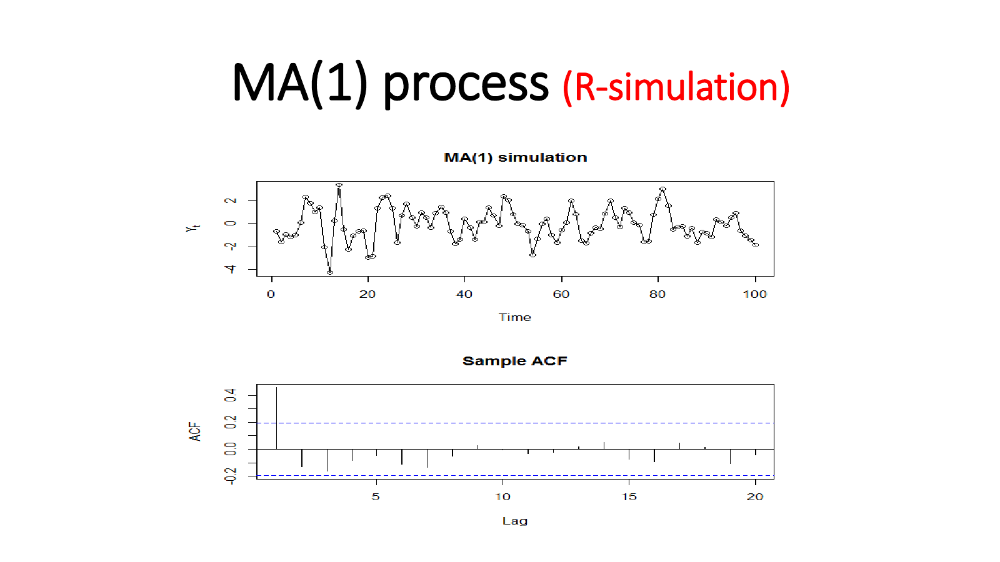
ทฤษฎีบอกว่า ρ₁ = 0.497 แต่ข้อมูลจริงมีแค่ n ค่า sample ACF จึงไม่เท่าทฤษฎีพอดี การ simulate ด้วย R ทำให้เห็นว่าข้อมูลที่มาจาก MA(1) จริงมีหน้าตาอย่างไร31 ตั้งค่า θ = 0.9, n = 100 และ σ² = 1 เส้นประของ sample ACF อยู่ที่ \(\pm2/\sqrt{100}=\pm0.2\) จึงคาดว่า lag 1 จะทะลุเส้นราว 0.5 และ lag อื่นจะอยู่ในเส้น ผลที่ได้คือ lag 1 ราว 0.45 ใกล้ค่าทฤษฎี และ lag 2 เป็นต้นไปอยู่ในเส้นประ ตรงกับรูปแบบตัดหลัง lag 1 กราฟอนุกรมแกว่งรอบศูนย์และเรียบกว่า white noise เล็กน้อย เพราะค่าติดกันใช้ shock ร่วมกันด้วยเครื่องหมายเดียวกัน ทุกครั้งที่รันได้ตัวเลขต่างกัน เช่น เมื่อใช้ set.seed(2603630) ได้ lag 1 = 0.412 ซึ่งต่ำกว่าทฤษฎีแต่ยังทะลุเส้น 0.2 ในคำสั่ง arima.sim ค่า order = c(0,0,1) คือ (p, d, q) ซึ่ง p เป็นของ AR d เป็นจำนวนครั้งของ differencing และ q เป็นของ MA32

scatter plot เป็นอีกวิธีดู autocorrelation ที่ข้อสอบเคยให้33 แกนนอนคือ \(Y_{t-1}\) แกนตั้งคือ \(Y_t\) และทุกจุดคือคู่ของค่าที่ห่างกันหนึ่งช่วง ที่ lag 1 จุดเรียงตัวเอียงขึ้นอย่างหลวม ๆ ตรงกับ ρ₁ ≈ 0.5 ซึ่งเป็นความสัมพันธ์บวกระดับปานกลาง ที่ lag 2 จุดกระจายเป็นก้อนกลมไม่มีทิศทาง ตรงกับ ρ₂ = 0 โค้ดใช้ zlag() จาก package TSA เพื่อเลื่อนอนุกรมไปหนึ่งหรือสองช่วง
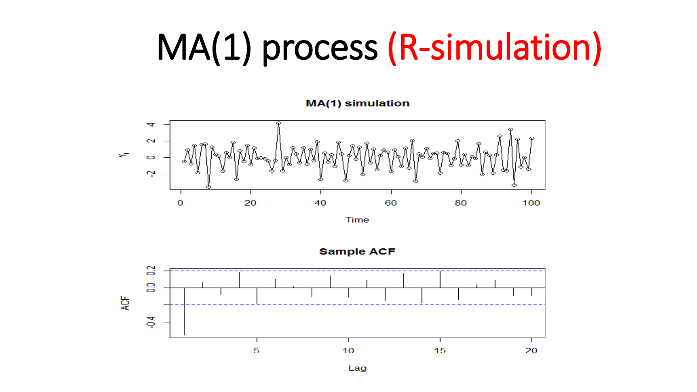
เมื่อ θ = −0.9 ค่าทฤษฎีคือ \(\rho_1=-0.9/(1+0.81)=-0.497\) ขนาดเท่าเดิมแต่เครื่องหมายกลับ เพราะ θ² ในตัวส่วนไม่สนเครื่องหมาย ส่วนตัวเศษ θ กำหนดเครื่องหมาย ความหมายคือ shock ที่ทำให้วันนี้สูงจะทำให้พรุ่งนี้ต่ำ sample ACF ที่ lag 1 ติดลบราว −0.45 ทะลุเส้นล่าง และ lag อื่นอยู่ในเส้น กราฟอนุกรมหยักกว่ากรณี θ = 0.9 มาก ขึ้นลงสลับกันเกือบทุกจุด อนุกรมที่ดูเป็นฟันเลื่อยถี่ ๆ จึงบ่งบอก ρ₁ ติดลบ scatter plot ที่ lag 1 เอียงลงตาม ρ₁ = −0.497 และที่ lag 2 ไม่มีทิศทาง34 ความชันของกลุ่มจุดที่ lag 1 จึงบอกเครื่องหมายของ θ ได้ทันที
MA(2) คือ \(X_t=w_t+\theta_1w_{t-1}+\theta_2w_{t-2}\) หรือ a moving average model of order 2, ซึ่งอนุกรมถูกกำหนดโดยปัจจัยอื่นย้อนหลัง 2 จุดเวลา35 วิธีหา property เหมือน MA(1) ต่างแค่มีพจน์มากขึ้น γ₀ กระจายได้ 9 เทอม แต่เหลือแค่ 3 เทอมที่ชนกัน36
ดัชนีของ \(X_t\) คือ t, t − 1, t − 2 จับคู่กับตัวเองได้สามคู่ จึงได้ \(\gamma_0=\sigma^2(1+\theta_1^2+\theta_2^2)\)
\(X_{t+1}=w_{t+1}+\theta_1w_t+\theta_2w_{t-1}\) ตรงกับ \(X_t\) สองตัว ดัชนี t ได้ \(1\cdot\theta_1\) และดัชนี t − 1 ได้ \(\theta_1\cdot\theta_2\) จึงได้ \(\gamma_1=(\theta_1+\theta_1\theta_2)\sigma^2\)
\(X_{t+2}=w_{t+2}+\theta_1w_{t+1}+\theta_2w_t\) ตรงกับ \(X_t\) ตัวเดียวที่ดัชนี t ได้ \(1\cdot\theta_2\) จึงได้ \(\gamma_2=\theta_2\sigma^2\)
ดัชนีของ \(X_{t+3}\) คือ t + 3, t + 2, t + 1 ไม่ตรงกับ t, t − 1, t − 2 เลย จึงเป็น 037
\(\rho_1=\dfrac{\theta_1+\theta_1\theta_2}{1+\theta_1^2+\theta_2^2}\), \(\rho_2=\dfrac{\theta_2}{1+\theta_1^2+\theta_2^2}\), \(\rho_h=0\) เมื่อ \(h\ge3\)38
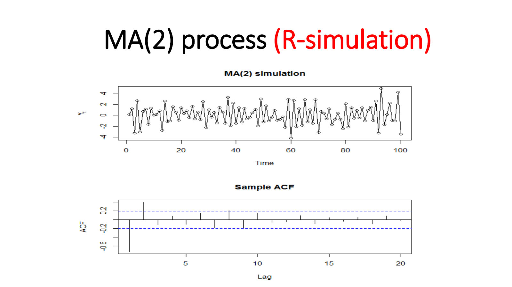
แทนค่า θ₁ = −0.9 และ θ₂ = 0.7 ตัวส่วนคือ \(1+0.81+0.49=2.30\) ตัวเศษของ ρ₁ คือ \(-0.9+(-0.9)(0.7)=-0.9-0.63=-1.53\) จึงได้ \(\rho_1=-1.53/2.30=-0.665\) และ \(\rho_2=0.7/2.30=0.304\) |ρ₁| = 0.665 เกิน 0.5 ได้ เพราะข้อจำกัด |ρ₁| ≤ 1/2 เป็นของ MA(1) เท่านั้น MA(2) มีพจน์ θ₁θ₂ เพิ่มเข้ามา sample ACF ทะลุเส้นที่ lag 1 ทางลบราว −0.65 และ lag 2 ทางบวกราว 0.3 ใกล้ค่าทฤษฎี หลังจากนั้นอยู่ในเส้นประ จึงเป็นรูปแบบตัดหลัง lag 2 เมื่อรันด้วย set.seed(2603630) ได้ −0.661, 0.259 และ lag 3 = 0.006 กราฟอนุกรมหยักถี่เพราะ ρ₁ ติดลบมาก39 scatter plot ที่ lag 1 เอียงลงชัดเจนตาม ρ₁ = −0.665 ส่วน lag 2 เอียงขึ้นเล็กน้อยตาม ρ₂ = 0.304 ถ้าข้อสอบให้ scatter plot มาแทน ACF ก็อ่านแบบเดียวกัน กลุ่มจุดที่เอียงชัดคือสัมพันธ์มาก กลุ่มจุดกลมคือไม่สัมพันธ์
จาก MA(1) และ MA(2) ได้รูปทั่วไป ถ้าให้ \(\theta_0=1\) จะได้ \(\gamma_h=\sigma^2\sum_{j=0}^{q-h}\theta_j\theta_{j+h}\) เมื่อ \(0\le h\le q\) และ \(\gamma_h=0\) เมื่อ \(h>q\) ตรวจกับ MA(2) ที่ h = 1 ได้ \(\theta_0\theta_1+\theta_1\theta_2=\theta_1+\theta_1\theta_2\) ตรงกัน ข้อสรุปที่ต้องจำคือ MA(q) มี autocorrelation ที่มีนัยสำคัญจนถึง lag q และเป็น 0 หลังจากนั้น40 ACF จึงเป็นเครื่องมือหา q ของ MA โดยตรง คือดู lag สุดท้ายที่ทะลุเส้น
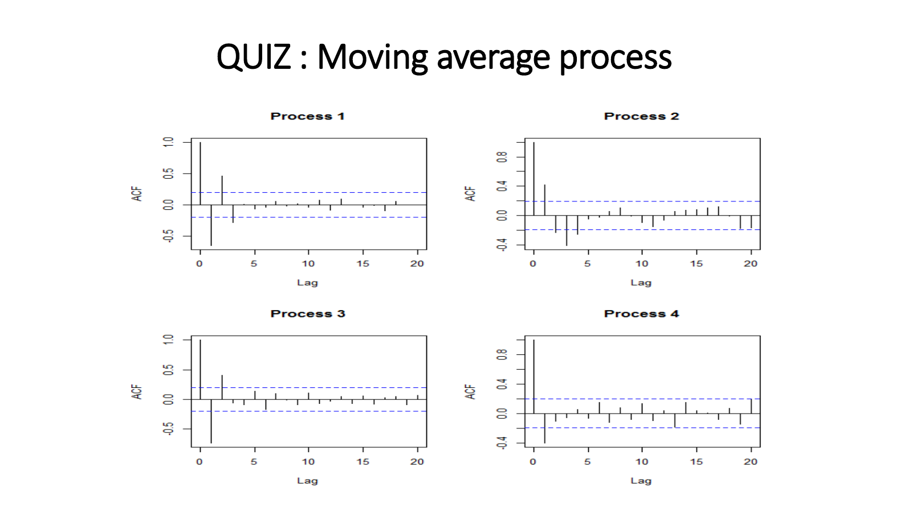
ข้อสอบเก่าข้อนี้ให้ ACF สี่กราฟแล้วถามว่าแต่ละกราฟเป็น MA อันดับเท่าไร กับดักคือแท่งแรกที่สูงเท่ากับ 1 อยู่ที่ lag 0 ซึ่งทุกอนุกรมมีค่า 1 เสมอ ไม่ได้บอกอะไร คนที่ตอบ MA(4) เพราะนับแท่งนั้นด้วยคือดูผิด และได้ศูนย์ทันที41 ให้อ่านทีละกราฟโดยนับจาก lag 1 และหา lag สุดท้ายที่ทะลุเส้นประ ±0.2 Process 1 มี lag 1 ≈ −0.6, lag 2 ≈ +0.45 และ lag 3 ≈ −0.25 จึงเป็น MA(3) Process 2 มี lag 1 ≈ +0.4, lag 3 ≈ −0.35 และ lag 4 ≈ −0.25 โดย lag 2 อยู่ใกล้เส้น จึงเป็น MA(4) Process 3 มี lag 1 ≈ −0.7 และ lag 2 ≈ +0.4 จึงเป็น MA(2) และ Process 4 มีแค่ lag 1 ≈ −0.35 จึงเป็น MA(1)42 Process 2 สอนอีกเรื่องคือ order คือ lag สุดท้ายที่ไม่เป็นศูนย์ แม้ lag กลางบางตัวจะเล็กจนอยู่ในเส้นก็ไม่เปลี่ยนคำตอบ เพราะ MA(4) อาจมี \(\rho_2\) ใกล้ศูนย์ได้ถ้า θ ทำให้ผลรวม \(\theta_2+\theta_1\theta_3+\theta_2\theta_4\) เล็ก วิธีอ่าน ACF แบบนี้เคยใช้หา q จริงเมื่อราว 20 ปีก่อน ปัจจุบันใช้ฟังก์ชันอัตโนมัติ แต่ข้อสอบภาค concept ยังถามได้43
ma.sim <- arima.sim(list(order = c(0,0,1), ma = 0.9), n = 100) # X_t = w_t + 0.9 w_(t-1)
par(mfrow=c(2,1)) # 2 แถว 1 คอลัมน์
plot(ma.sim, ylab=expression(Y[t]), xlab="Time", type="o", main="MA(1) simulation")
acf(ma.sim, main="Sample ACF")

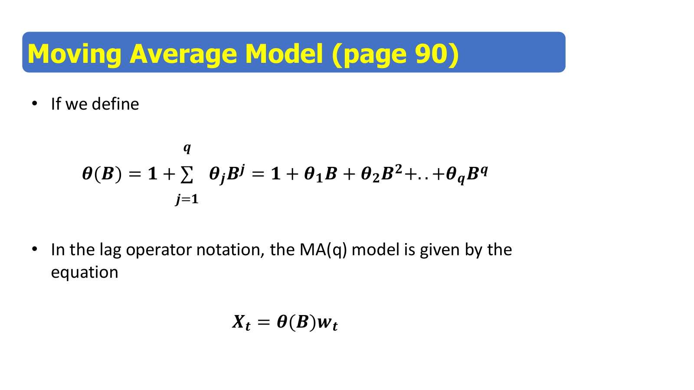

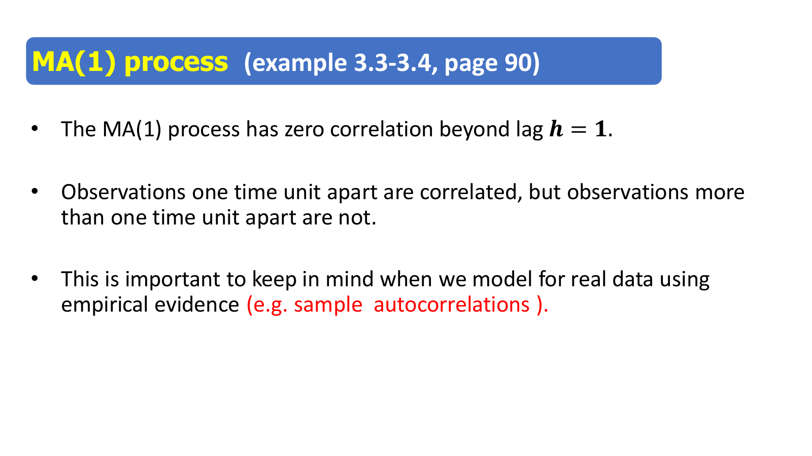
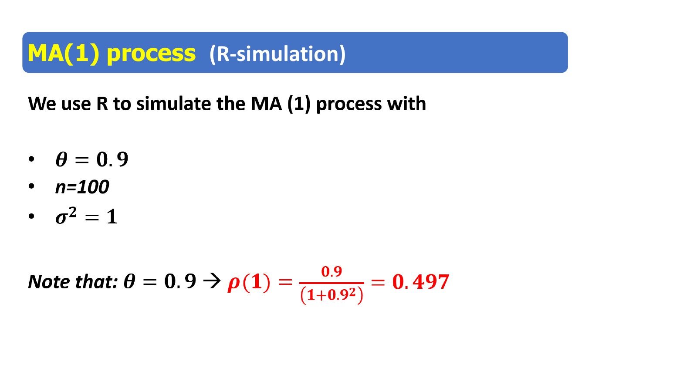

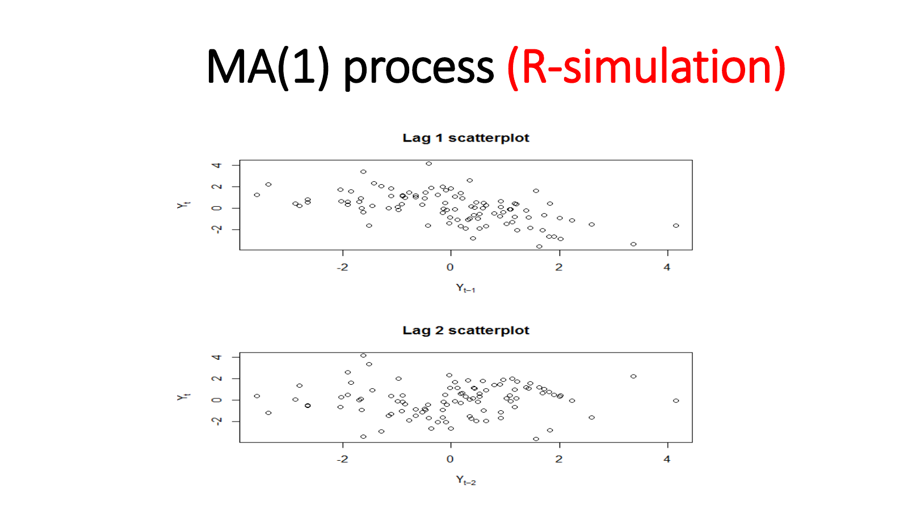
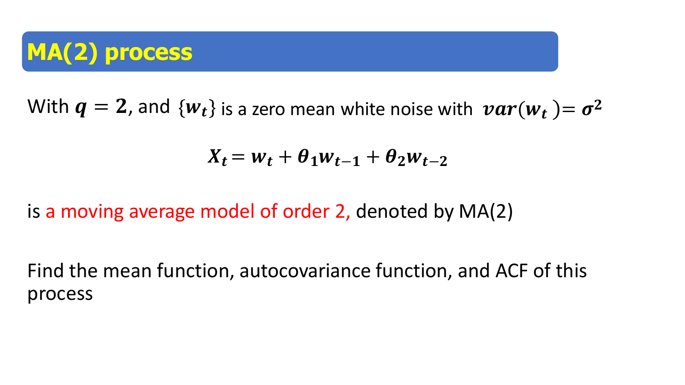

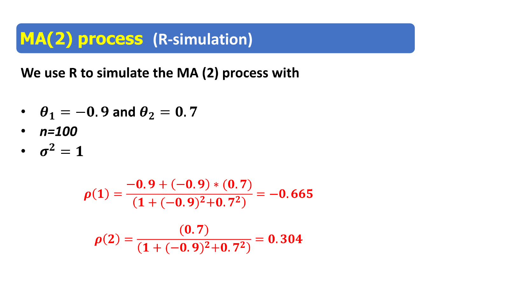


MA ใช้ shock ย้อนหลังอธิบายค่าวันนี้ ส่วน AR ใช้ค่าของตัวเองย้อนหลัง เช่น อุณหภูมิห้องตอนนี้ใกล้กับอุณหภูมิเมื่อชั่วโมงก่อน บวกการเปลี่ยนแปลงสุ่มเล็กน้อย AR ยากกว่า MA เล็กน้อย44 เพราะ \(X_{t-1}\) เองก็มาจาก \(X_{t-2}\) ต่อไปเรื่อย ๆ เวลาหา covariance จึงต้องไล่ไปเรื่อย ๆ และชนกันไปเรื่อย ๆ45 AR(p) คือ \(X_t=\phi_1X_{t-1}+\phi_2X_{t-2}+\dots+\phi_pX_{t-p}+w_t\) หรือ \(X_t=\sum_{j=1}^{p}\phi_jX_{t-j}+w_t\) โดย \(w_t\sim N(0,\sigma^2)\) p คือ order และเป็นจำนวนพารามิเตอร์ φ ตัวแปรสุ่มคือ \(X\) และ \(w\) ส่วน φ เป็นสัมประสิทธิ์46 สรุปได้ว่า AR คือค่าของอนุกรมเวลา t ที่พยากรณ์ด้วยค่าของตัวเองย้อนหลัง p ค่า ขณะที่ MA คือค่าที่ถูกกำหนดด้วยปัจจัยอื่นที่ไม่ได้เก็บไว้ย้อนหลัง q ค่า47
การเขียนแบบ backshift ต้องย้ายพจน์ X ทั้งหมดไปทางซ้าย \(X_t-\phi_1X_{t-1}-\dots-\phi_pX_{t-p}=w_t\) แล้วดึง \(X_t\) ออก ได้ \((1-\phi_1B-\dots-\phi_pB^p)X_t=w_t\) หรือ 𝚽(𝑩)𝑿𝒕= 𝒘𝒕; 𝒕= 𝟏, 𝟐, . . , 𝒏 ต่างจาก MA ที่ดึง \(w_t\) ออก48 ต้องสังเกตเครื่องหมาย θ(B) ของ MA เป็นบวก \(1+\theta_1B+\dots\) แต่ Φ(B) ของ AR เป็นลบ \(1-\phi_1B-\dots\) เพราะเกิดจากการย้ายข้าง Φ(B) เรียกว่า characteristic polynomial และรากของมันบอกว่าอนุกรมนิ่งหรือไม่ เช่น \(X_t=0.5X_{t-1}+0.3X_{t-2}+w_t\) เขียนได้เป็น \((1-0.5B-0.3B^2)X_t=w_t\) สไลด์ระบุเงื่อนไขสี่ข้อ ข้อที่ต้องจำคือ \(\phi_p\neq0\) ซึ่งสไลด์เขียนกำกับว่า (important) ด้วยเหตุผลเดียวกับ \(\theta_q\neq0\) ของ MA อีกข้อคือ \(w_t\) เป็น uncorrelated กับ \(X_{t-j}\) ทุก j ≥ 1 แปลว่า shock ใหม่ไม่เกี่ยวกับอดีต ข้อนี้เป็นกุญแจของการหา γ₀ ข้างล่าง เพราะทำให้ \(\mathrm{Cov}(X_{t-1},w_t)=0\) สไลด์สรุปว่า AR บอกว่าค่า ณ เวลา t คือ linearcombination of the 𝒑previous realization บวก noise ต่างจาก regression ปกติตรงที่ตัวแปรต้น \(X_{t-1},\dots,X_{t-p}\) เป็นตัวแปรสุ่ม ไม่ใช่ค่าคงที่ที่เรากำหนด ถ้า p = 0 จะเหลือ \(X_t=w_t\) คือ white noise และถ้า mean μ ไม่เป็นศูนย์ให้ใช้ \(X_t-\mu\) แทน \(X_t\) ซึ่งเมื่อย้าย μ มารวมกันจะได้ \(X_t=a+\phi_1X_{t-1}+\dots+\phi_pX_{t-p}+w_t\) โดย \(a=\mu(1-\phi_1-\dots-\phi_p)\)
AR(1): \(X_t=5+0.75X_{t-1}+w_t\) mean ของอนุกรมคือเท่าไร
อนุกรมนิ่งมี \(E(X_t)=E(X_{t-1})=\mu\) จึงได้ \(\mu=5+0.75\mu\)
\(0.25\mu=5\) ได้ \(\mu=20\) ตรงกับสูตร \(a=\mu(1-\phi)=20(0.25)=5\)
arima() ใน R รายงานค่าที่ชื่อ intercept ซึ่งคือ μ ไม่ใช่ aตั้ง p = 1 ได้ AR(1) \(X_t=\phi X_{t-1}+w_t\) สไลด์ชี้สองกรณีพิเศษที่เชื่อมกับ Lesson 1 คือ φ = 1 เป็น a random walk และ φ = 0 เป็น white noise AR(1) จึงอยู่ระหว่างสองขั้วนี้ φ ใกล้ 0 คือแทบไม่จำอดีต φ ใกล้ 1 คือจำอดีตมากจนเกือบเป็น random walk ลองเทียบกับ MA(1) ด้วยตัวเลข ให้ลูกเต๋าวันที่ 0 ออก 10 และวันหลังจากนั้นออก 0 ทุกวัน MA(1) \(X_t=w_t+0.5w_{t-1}\) ได้ 10, 5, 0, 0 เพราะวันที่ 2 ใช้ลูกเต๋าวันที่ 1 ซึ่งเป็น 0 ส่วน AR(1) \(X_t=0.5X_{t-1}+w_t\) ได้ 10, 5, 2.5, 1.25 เพราะใช้ค่า X ของเมื่อวานซึ่งมีผลของวันที่ 0 ติดมาด้วย MA จึงจำได้แค่ q วันแล้วลืมสนิท ส่วน AR ค่อย ๆ ลืมแต่ไม่ลืมสนิท การหาสมบัติของ AR(1) ไม่ตรงไปตรงมาเหมือน MA49 และใช้ทริกจากความนิ่ง
ถ้าอนุกรมนิ่ง ค่าคาดหมายและ variance ไม่ขึ้นกับเวลา จึงใช้ \(E(X_t)=E(X_{t-1})\) และ \(\mathrm{Var}(X_t)=\mathrm{Var}(X_{t-1})=\gamma_0\) แทนการไล่แทนค่าย้อนหลังไม่รู้จบ50
\(E(X_t)=\phi E(X_{t-1})+0\) จึงได้ \(\mu=\phi\mu\) หรือ \(\mu(1-\phi)=0\) เมื่อ φ ≠ 1 ได้ \(\mu=0\)
\(\mathrm{Var}(\phi X_{t-1}+w_t)=\phi^2\mathrm{Var}(X_{t-1})+\sigma^2\) (ไม่มีพจน์ covariance เพราะ \(w_t\) ไม่สัมพันธ์กับ \(X_{t-1}\)) จึงได้ \(\gamma_0=\phi^2\gamma_0+\sigma^2\) แก้สมการได้ \(\gamma_0=\dfrac{\sigma^2}{1-\phi^2}\)51
\(\mathrm{Cov}(X_t,X_{t+1})=\mathrm{Cov}(X_t,\phi X_t+w_{t+1})=\phi\gamma_0+0\) เพราะ \(X_t\) ไม่สัมพันธ์กับ \(w_{t+1}\) แต่สัมพันธ์กับ \(\phi X_t\)52 ได้ \(\gamma_1=\phi\gamma_0\)
\(\mathrm{Cov}(X_t,\phi X_{t+1}+w_{t+2})=\phi\gamma_1=\phi^2\gamma_0\) ทำซ้ำได้ \(\gamma_h=\phi^h\gamma_0\)
\(\rho_h=\gamma_h/\gamma_0=\phi^h\)
สูตร γ₀ บอกได้สองเรื่อง เรื่องแรก ตัวส่วน \(1-\phi^2\) ต้องเป็นบวก variance จึงมีความหมาย ต้องมี \(|\phi|<1\) เรื่องที่สอง เมื่อ φ เข้าใกล้ 1 ตัวส่วนเข้าใกล้ 0 variance จึงโตไม่จำกัด ตรงกับ random walk ใน Lesson 1 ที่ variance เท่ากับ \(t\sigma^2\) เมื่อเทียบกับ MA(1) ซึ่ง variance \(\sigma^2(1+\theta^2)\) จำกัดเสมอไม่ว่า θ เป็นเท่าไร MA จึงนิ่งเสมอ แต่ AR นิ่งเฉพาะเมื่อ φ อยู่ในช่วงที่กำหนด
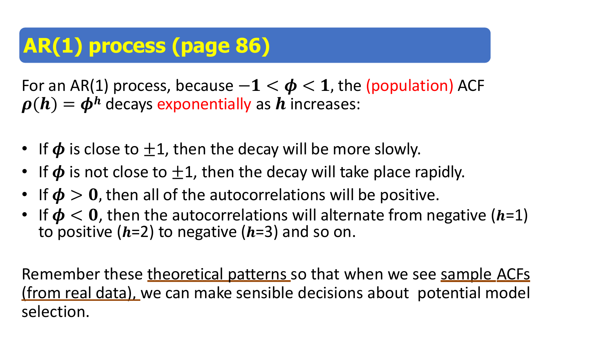
เพราะ (population) ACF คือ \(\rho_h=\phi^h\) และ |φ| < 1 ค่าจึงลดลง exponentially ไม่ตัดเป็นศูนย์ทันทีเหมือน MA ถ้า φ = 0.9 ได้ 0.9, 0.81, 0.729, 0.656 บวกทั้งหมดและลดช้ามาก ต้องถึง lag 16 จึงต่ำกว่า 0.2 (\(0.9^{16}=0.185\)) ถ้า φ = 0.5 ได้ 0.5, 0.25, 0.125, 0.0625 ซึ่งลดเร็วและต่ำกว่า 0.2 ตั้งแต่ lag 3 ถ้า φ = −0.9 ได้ −0.9, 0.81, −0.729, 0.656 ซึ่งสลับบวกลบเพราะกำลังคี่ติดลบและกำลังคู่เป็นบวก และถ้า φ = −0.5 ได้ −0.5, 0.25, −0.125, 0.0625 ซึ่งสลับบวกลบและลดเร็ว53 รูปแบบนี้เรียกว่า tail off หรือ decay slowly ข้อมูลจริงอาจไม่สมบูรณ์แบบนี้ แต่ถ้าใกล้เคียงสัก 80% ก็พอสรุปได้ว่าน่าจะเป็นแบบนี้54 อุณหภูมิโลกใน Lesson 3 มี ACF lag 1 = 0.819 และลดลงช้า ๆ ถึง lag 16 คล้าย AR(1) ที่ φ ใกล้ 0.9 แต่สาเหตุในกรณีนั้นคือ trend ไม่ใช่ AR จึงต้องตรวจความนิ่งก่อนเสมอ
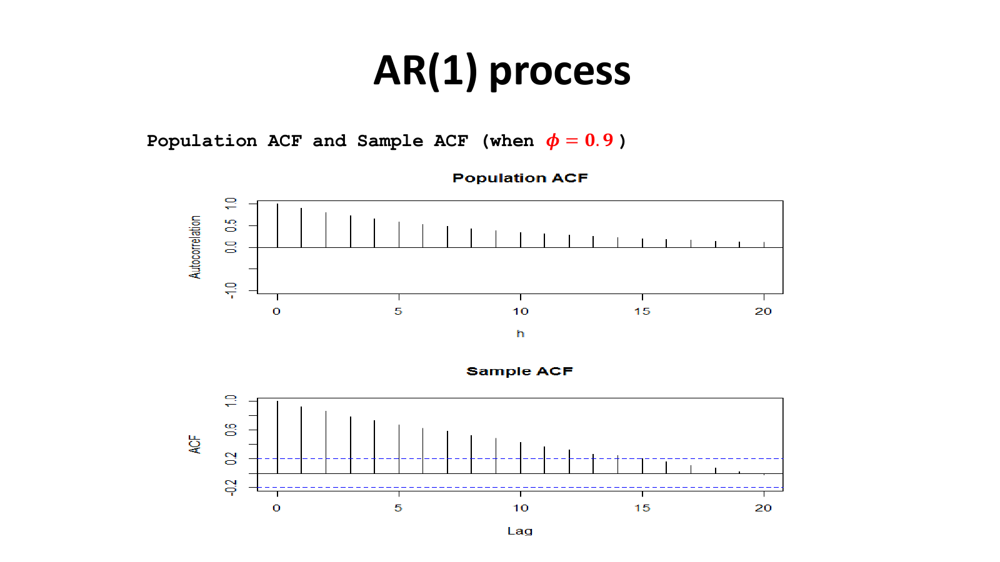
population ACF ลดลงตาม 0.9, 0.81, 0.729 อย่างสม่ำเสมอ ส่วน sample ACF จากข้อมูล 100 ค่ามีรูปแบบเดียวกันแต่ไม่เรียบเท่า เมื่อรันด้วย set.seed(2603630) ได้ sample ACF 0.905, 0.826, 0.760, 0.698 ใกล้ทฤษฎีมาก และ arima(a, order = c(1,0,0)) ประมาณ φ ได้ 0.9105 (s.e. 0.0391) ข้อสังเกตสำคัญคือ ACF ของ AR บอกไม่ได้ว่าเป็น lag เท่าไร55 เพราะ AR(1) และ AR(2) ต่างก็ลดลงช้า ๆ ACF จึงบอก p ไม่ได้ ต้องใช้ PACF ใน Lesson 6
AR(1) นิ่งเมื่อ |φ| < 1 แต่ AR(p) ที่มีหลาย φ ต้องตรวจจากรากของ Φ(B) นี่คือทฤษฎีเดียวของวิชาที่ต้องใช้คณิต คือแก้สมการกำลังสอง56 และจะสอนเต็มใน Lesson 7 ทฤษฎีนี้ทำงานกับพหุนาม \(\Phi(B)=1-\phi_1B-\dots-\phi_pB^p\) โดยมอง B เป็นตัวแปรธรรมดา เช่น AR(1) ที่ φ = 0.5 มี \(\Phi(B)=1-0.5B\) พหุนามดีกรี p แยกตัวประกอบได้เป็น \(\prod_{i=1}^{p}(1-\alpha_iB)\) โดย α คือ the reciprocal roots เพราะถ้าแทน \(B=1/\alpha_i\) วงเล็บนั้นจะเป็นศูนย์ รากจริงจึงเป็น \(\beta_i=1/\alpha_i\) เช่น \(\Phi(B)=1-1.1B+0.3B^2=(1-0.5B)(1-0.6B)\) ซึ่งตรวจได้จาก 0.5 + 0.6 = 1.1 และ 0.5 × 0.6 = 0.3 ได้ α = 0.5, 0.6 และราก β = 2, 1.667 ทฤษฎีบทกล่าวว่า AR(p) นิ่งก็ต่อเมื่อ modulus ของรากทุกตัวมากกว่า 1 หรือเทียบเท่ากับ |α| ทุกตัวน้อยกว่า 1 สำหรับ AR(1) \(1-\phi B=0\) ได้ราก \(1/\phi\) เงื่อนไขจึงเป็น |φ| < 1 ตรงกับที่ได้จาก γ₀ เช่น φ = 0.5 มีราก 2 จึงนิ่ง AR(2) ที่ φ = (1.1, −0.3) มีราก 2 และ 1.667 ซึ่งตรวจด้วยสูตรได้ \(B=\dfrac{1.1\pm\sqrt{1.21-1.2}}{0.6}=\dfrac{1.1\pm0.1}{0.6}\) มากกว่า 1 ทั้งคู่จึงนิ่ง และเป็นหนึ่งในสี่กรณีของ R_codes_2 ส่วน AR(2) ที่ φ = (1.7, −0.7) แยกได้เป็น \((1-0.7B)(1-B)\) มีราก 1 ซึ่งไม่มากกว่า 1 จึงไม่นิ่ง ตัวอย่างนี้เป็นกับดัก "ดูเหมือน AR(2) แต่ไม่ใช่" เพราะวงเล็บ \((1-B)\) คือ differencing จึงเป็น ARIMA(1,1,0)57 คำว่า modulus ใช้เมื่อรากเป็นจำนวนเชิงซ้อน เช่น φ = (1, −0.5) ได้ \(0.5B^2-B+1=0\) และ \(B=1\pm i\) ซึ่งมี modulus \(\sqrt{1^2+1^2}=1.414>1\) จึงนิ่ง ในข้อสอบส่วนใหญ่รากจะเป็นจำนวนจริง58 และมีแค่สมการกำลังสอง59 สไลด์เรียก α ว่า poles ของ AR และบอกว่าทฤษฎีนี้มาจาก general linear process ซึ่งไม่ต้องพิสูจน์ในวิชานี้
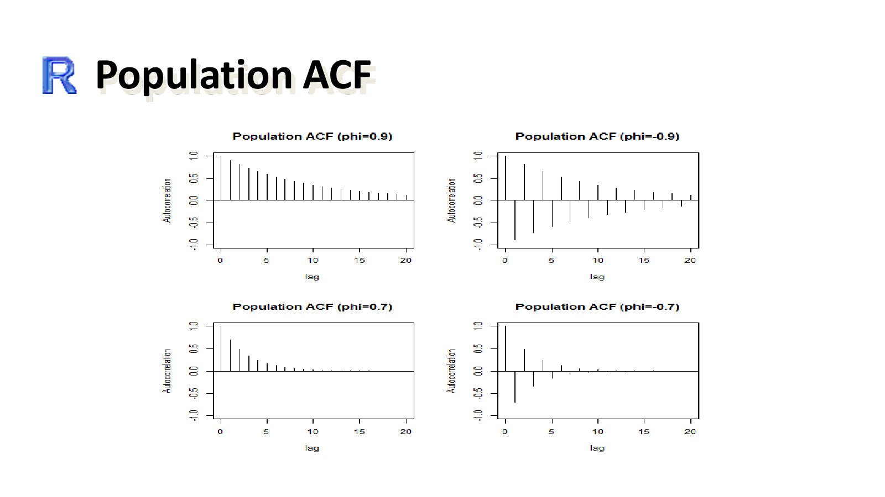
R มีสองคำสั่งที่ต้องแยกให้ออก ARMAacf() คำนวณ ACF ตามทฤษฎีจากสูตรจริง ไม่มีความสุ่ม รันกี่ครั้งก็ได้ค่าเดิม ส่วน arima.sim() สร้างข้อมูลสุ่มจากโมเดลแล้วใช้ acf() หา sample ACF ซึ่งเปลี่ยนทุกครั้งที่รัน60 population ACF สี่กราฟนี้ตรงกับรูปแบบข้างบน φ = 0.9 ลดช้าและบวกทั้งหมด (0.9, 0.81, 0.729) φ = −0.9 สลับเครื่องหมายและลดช้า (−0.9, 0.81, −0.729) φ = 0.7 ลดเร็วกว่า (0.7, 0.49, 0.343) และ φ = −0.7 สลับเครื่องหมายและลดเร็ว (−0.7, 0.49, −0.343) lag 2 ของ φ = 0.7 และ −0.7 เท่ากันที่ 0.49 เพราะกำลังคู่ลบเครื่องหมายทิ้ง กราฟนี้ไม่มีเส้นประ ±2/√n เพราะเป็นค่าทฤษฎี ไม่มี sampling error
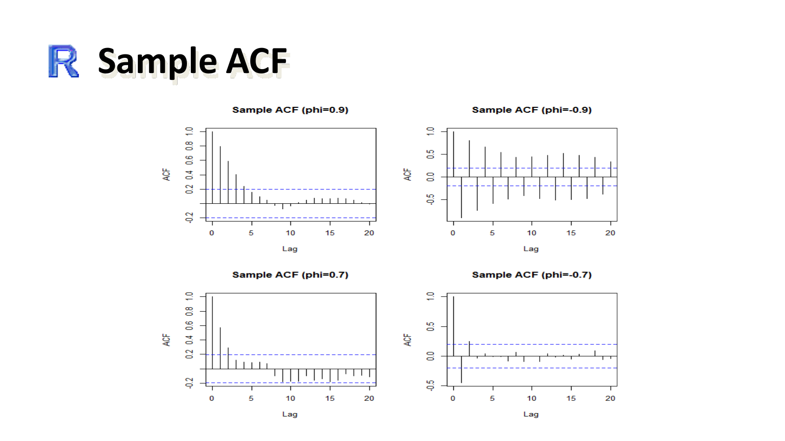
sample ACF ทั้งสี่มีรูปแบบเดียวกับ population ACF คือบวกลดช้า สลับเครื่องหมาย และลดเร็ว แต่แท่งที่ lag สูงไม่เป็นศูนย์พอดี บางแท่งแตะเส้นประ ±0.2 ทั้งที่ค่าทฤษฎีเล็กมาก นี่คือ sampling error จากข้อมูลแค่ 100 ค่า ข้อมูลถูกสร้างด้วย arima.sim(list(order = c(1,0,0), ar = φ), n = 100) ถ้าใส่ φ ที่ทำให้ไม่นิ่ง เช่น ar = 1.2 R จะแจ้ง error ว่า 'ar' part of model is not stationary เพราะ arima.sim ตรวจรากตามทฤษฎีบทก่อนสร้างข้อมูล simulation แบบนี้ใช้ทำ simulation study ใน IS หรือ thesis ได้ ขึ้นอยู่กับอาจารย์ที่ปรึกษา61 ข้อควรระวังคือ AR(1) φ = 0.7 อาจถูกมองว่าเป็น MA(2) ถ้าดูจาก simulation62 เพราะ ρ₁ = 0.7 และ ρ₂ = 0.49 ทะลุเส้น ส่วน ρ₃ = 0.343 กับ ρ₄ = 0.24 อาจตกลงมาในเส้นเมื่อมี noise ดูเผิน ๆ จึงเหมือนตัดหลัง lag 2 วิธีแยกคือดูว่าค่าลดลงทีละสัดส่วนเดิม (0.7, 0.49, 0.34) หรือไม่ และใช้ PACF ใน Lesson 6
acf = ARMAacf(ar = c(0.9), lag.max = 20) # ρ₀ ถึง ρ₂₀ = 1, 0.9, 0.81, ...
plot(acf, x = 0:20, type = "h", ylim = c(-1,1), xlab = "lag",
ylab = "Autocorrelation", main = "Population ACF (phi=0.9)")
abline(h = 0)x = 0:20 เริ่มที่ lag 0 เพราะ ARMAacf คืน ρ₀ = 1 มาด้วย type = "h" วาดเป็นแท่งแนวตั้ง และ ylim = c(-1,1) ทำให้เห็นค่าติดลบ ถ้าใส่ ma = ... แทน ar ก็ได้ ACF ของ MA

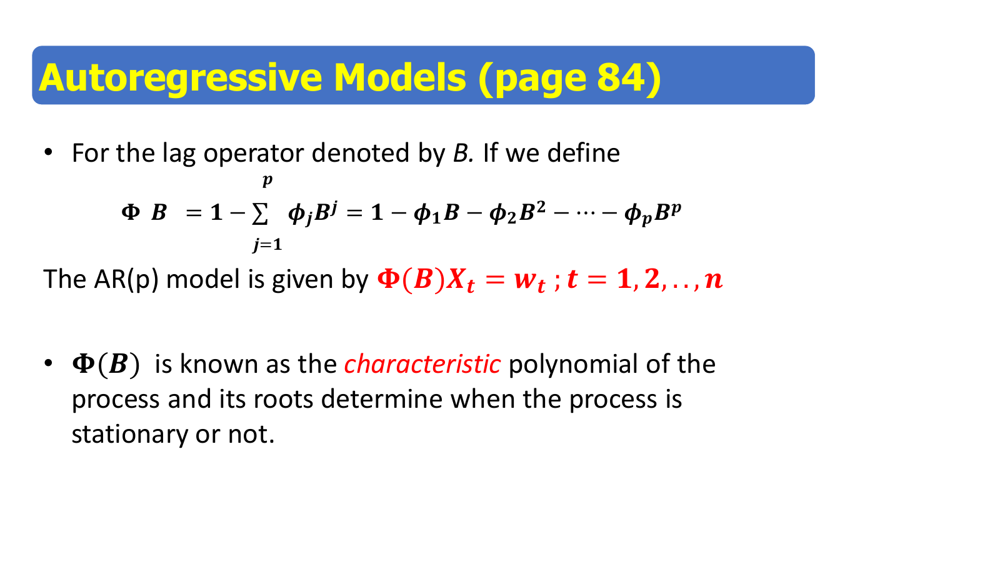

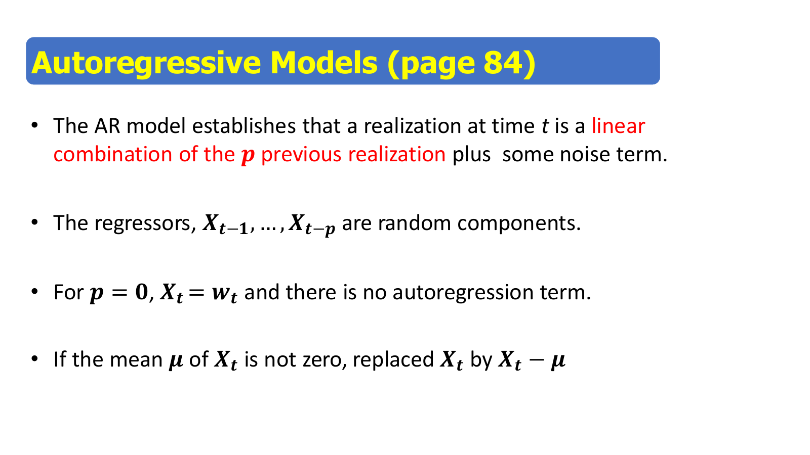

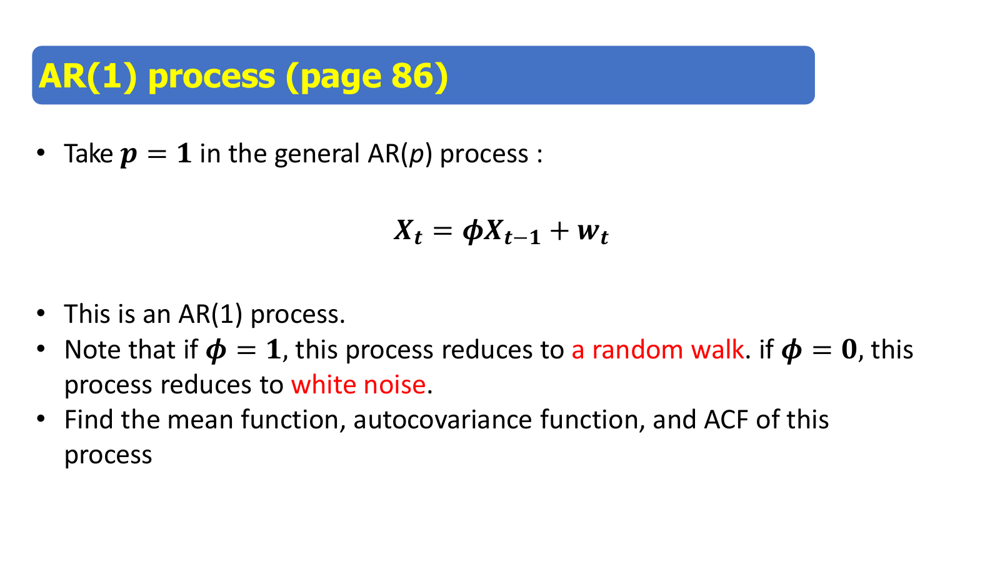
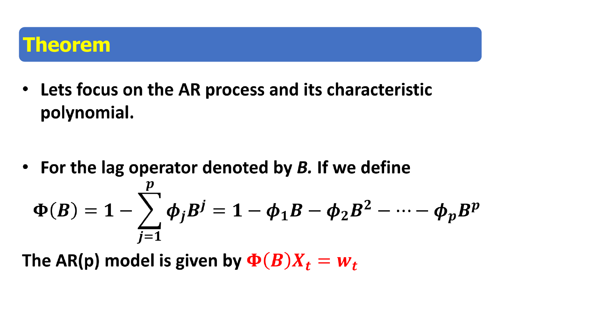
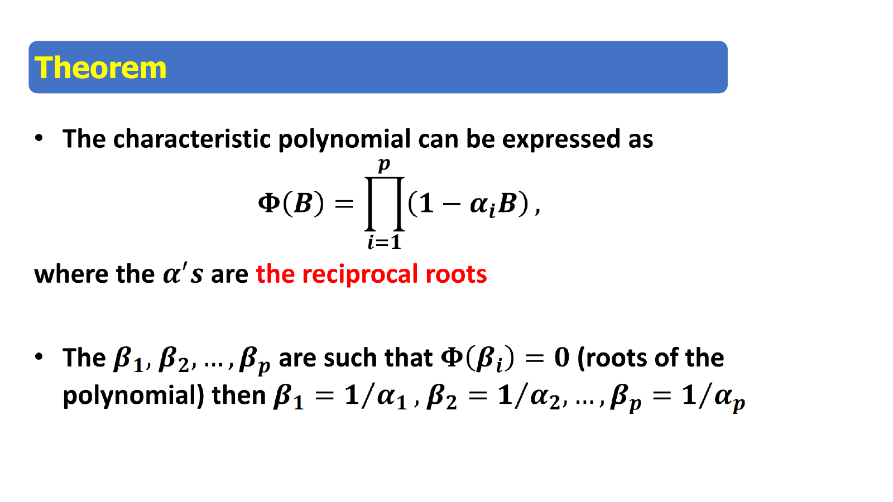
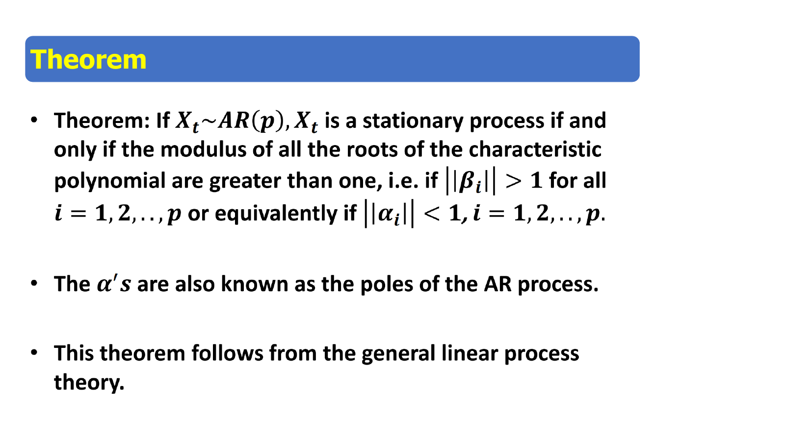
1 ทุกตัว" loading="lazy">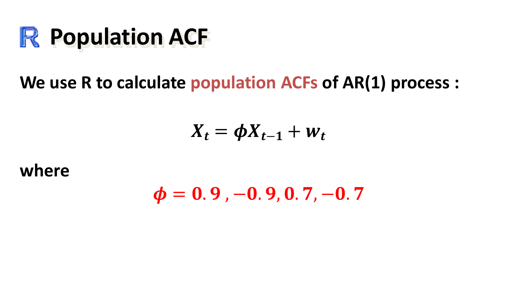

เมื่อรวมสองโมเดลเป็นหนึ่งจะได้ \(\Phi(B)X_t=\theta(B)w_t\) เรียกว่า ARMA(p,q) ด้านซ้ายคือส่วน AR และด้านขวาคือส่วน MA ARMA(1,0) คือ AR(1) และ ARMA(0,2) คือ MA(2) เมื่อค้นคำว่า Box-Jenkins จะพบโมเดลนี้เพียงตัวเดียว เพราะครอบคลุมทุกแบบ สิ่งที่ยังขาดคือ I (differencing) ซึ่งเติมเพียงเล็กน้อยใน Lesson 663 เช่น \(X_t=0.5X_{t-1}+w_t+0.4w_{t-1}\) ย้าย X ไปซ้ายได้ \((1-0.5B)X_t=(1+0.4B)w_t\) จึงเป็น ARMA(1,1)
ทำไมต้องแยก MA กับ AR ตั้งแต่ต้น สาเหตุคือของในโลกจริงจำอดีตได้สองแบบ บางเรื่องมีผลอยู่สั้น ๆ แล้วจบสนิท เช่น โปรโมชันที่ดันยอดขายอยู่สองสัปดาห์ บางเรื่องมีแรงเฉื่อย ค่าวันนี้เกิดจากค่าเมื่อวานโดยตรง เช่น เงินในบัญชีหรืออุณหภูมิน้ำที่ค่อย ๆ เย็นลง สองแบบนี้พยากรณ์ออกมาต่างกัน ถ้าวันนี้ยอดขายสูงกว่าค่าเฉลี่ย 10 หน่วยเพราะเหตุบังเอิญ MA(1) ที่ θ = 0.5 จะพยากรณ์ว่าพรุ่งนี้สูงกว่า 5 และมะรืนกลับมาเท่าค่าเฉลี่ยพอดี ส่วน AR(1) ที่ φ = 0.5 จะพยากรณ์ 5, 2.5, 1.25 ไปเรื่อย ๆ ถ้าเลือกโมเดลผิด การพยากรณ์ตั้งแต่วันที่สองจะผิดทันที ในทางประวัติศาสตร์ ปี 1927 Yule เสนอแนวคิด AR จากการศึกษาจุดดับบนดวงอาทิตย์ ขณะที่ Slutsky แสดงว่าการเฉลี่ยความบังเอิญหลายวันก็สร้างรอบคลื่นได้ ซึ่งเป็นแนวคิด MA แล้ว Box และ Jenkins จึงรวมทั้งสองเป็น ARMA และ ARIMA ในปี 1970 สองแบบนี้ยังเกี่ยวกันด้วย ถ้าแทน \(X_{t-1}\) ใน AR(1) ซ้ำไปเรื่อย ๆ จะได้ \(X_t=w_t+0.5w_{t-1}+0.25w_{t-2}+\dots\) AR(1) จึงเป็น MA ที่ยาวไม่สิ้นสุด และน้ำหนักลดลงทีละครึ่ง เรื่องนี้จะพิสูจน์ใน Lesson 7 ความต่างของสองแบบจึงอยู่ที่ว่า shock อยู่นานแค่ไหน MA(q) อยู่ q วันแล้วหาย ส่วน AR อยู่ตลอดแต่จางลงเรื่อย ๆ และถ้าใช้ MA บรรยายข้อมูลที่ความจำยาวต้องใช้พารามิเตอร์มาก ขณะที่ AR(1) ใช้ตัวเดียว
| MA(q) | AR(p) | |
|---|---|---|
| สมการ | \(X_t=\theta(B)w_t\) | \(\Phi(B)X_t=w_t\) |
| ค่าวันนี้มาจาก | shock วันนี้และย้อนหลัง q วัน | ค่าของตัวเองย้อนหลัง p วัน บวก shock |
| Mean (ไม่มีค่าคงที่) | 0 | 0 |
| γ₀ ของอันดับ 1 | \(\sigma^2(1+\theta^2)\) | \(\sigma^2/(1-\phi^2)\) |
| ACF ของอันดับ 1 | \(\rho_1=\theta/(1+\theta^2)\), \(\rho_h=0\) เมื่อ h ≥ 2 | \(\rho_h=\phi^h\) |
| รูปร่าง ACF | ตัดเป็นศูนย์หลัง lag q | tail off (ลดแบบเลขชี้กำลัง หรือสลับเครื่องหมาย) |
| นิ่งเมื่อ | เสมอ | รากของ Φ(B) มี modulus มากกว่า 1 ทุกตัว |
| ACF ใช้หา order ได้ไหม | ได้ q = lag สุดท้ายที่ทะลุเส้น | ไม่ได้ ใช้ PACF (Lesson 6) |
ลองฝึกต่อในแบบฝึก Lesson 5 หรืออ่านต่อ Lesson 6 — AR(2), PACF และ ARIMA
ตัวเลขยกในเนื้อหาชี้มาที่รายการนี้ แต่ละรายการระบุคลาสและนาทีของคลิป พร้อมถ้อยคำในคลิปเมื่อมี
| หน้า | เนื้อหา | อยู่ในตอน |
|---|---|---|
| 1 | ปก Model for Stationary Time Series (Part 1) | etc — ปก |
| 2–5 | Review detrending, differencing, Looking ahead | ตอน 2 |
| 6–22 | MA(q), MA(1) property และ simulation, MA(2), MA(q) process | ตอน 3 |
| 23 | Box-Jenkins Model | ตอน 2 |
| 24–26 | Summary MA(q) ที่มี μ และ QUIZ Moving average process | ตอน 3 |
| 27–41 | AR(p), Φ(B), mean และ intercept, AR(1) และ ACF, theorem รากของ characteristic polynomial, population และ sample ACF ใน R | ตอน 4 |
แหล่งอื่นที่ใช้: Class 5 ช่วง 0:46–1:04 (Xbox) และ 1:04–2:10 (Box-Jenkins, MA, AR, ARMA), Class 6 ช่วง 0:00–0:30 (γ ของ AR(1), รูปร่าง ACF, ARMAacf กับ arima.sim) และ 1:15–1:26 (เงื่อนไขของ φ), Class 7-2 ช่วง 0:16–0:20 (modulus ของราก), ไฟล์ R_codes_1.txt, R_codes_2.txt และ XBOX.txt ในโฟลเดอร์ CLASS 5